Sony WM-FX707 Repair
After I brought that Aiwa back to life a little while ago, I was pleased with myself, but eager to try again with the knowledge I'd gained. That repair worked out, but I ended up with wow and flutter figures that I wasn't super happy with. For my next attempt, I wanted to up the ante a little bit.
On the bench today is a Sony WM-FX707. This Walkman is the real McCoy. Manufactured in the early 90s, it packs an AM/FM radio and a cassette player into a svelte case. I bought this one for $75 on eBay, which is a big jump from the $30 initial price that I paid for the Aiwa. This unit is a bit more of a premium offering, with soft-touch logic controls, metal construction, and a way smaller footprint. While it gives up the recording feature that the Aiwa offers, I don't really miss it. I have a full-sized deck for that.
I didn't forget everything that made the last repair kind of a pain in the ass. Most notably, I made sure that I could get my hands on a service manual.
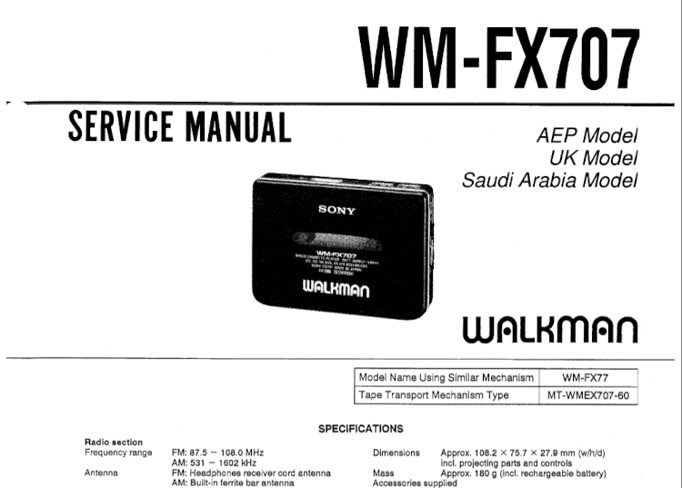
I also made sure there was a teardown video on YouTube for reference before I pulled the trigger. When I first skimmed through it, I was very happy to see how easy it was to get this thing apart. There were no ribbon cables making perplexing jumps through holes in plastic components or wires on all sides to desolder just to get inside like last time. Instead, I'd just have to remove a handful of screws to be able to rotate the main board up and get into the guts.
Put a pin in that video... we'll come back to it. Anyways, I pulled the trigger on an eBay listing asking only $75 for a relatively intact example listed as "For parts or not working."
Diagnosis
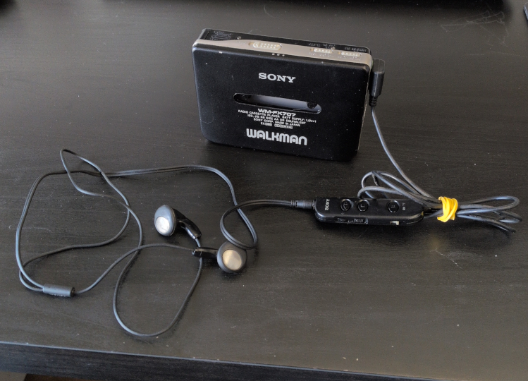
When it finally arrived, I had a bit of a heart attack when I noticed that the battery door was, for lack of a better description... flaccid. There was absolutely no tension or anything to keep it closed; it just fell open when I rotated it downwards. Thankfully, when I got my hands on some batteries, I found that they put enough tension on the door to keep it closed, though I'm still a little pissed at the eBay seller for conveniently leaving that out of the listing.
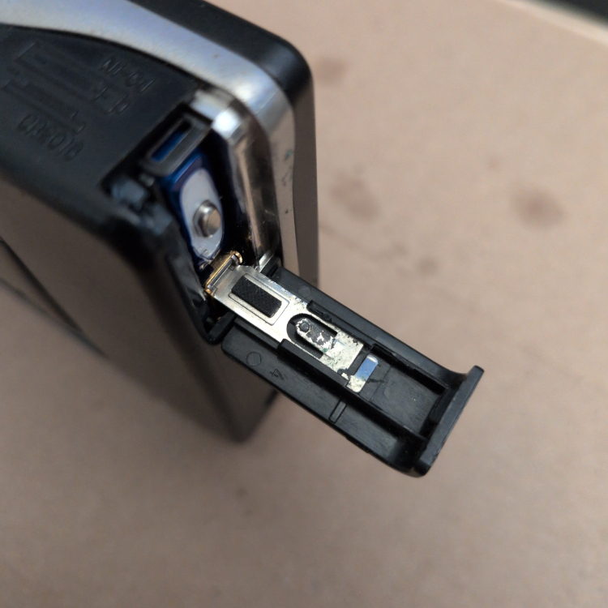
Whatever. Once I had it in hand, I did some tests and found that the listing was otherwise correct. The FM and AM radio did work, at least when the battery could make decent contact. You'll note that this Walkman takes a pretty funny-looking battery. These batteries are super slim, rectangular rechargeables that were used in Sony devices like cassette and minidisk Walkmans back in the day. Original "gumsticks" used a nickel-cadmium chemistry (gross, toxic) and have been out of production for a long time, but generic nickel-metal hydride ones are still readily available today. The new ones work just as well as the old ones do, don't contain any nasty cadmium, and can be charged on any regular charger that supports NiMH chemistry.
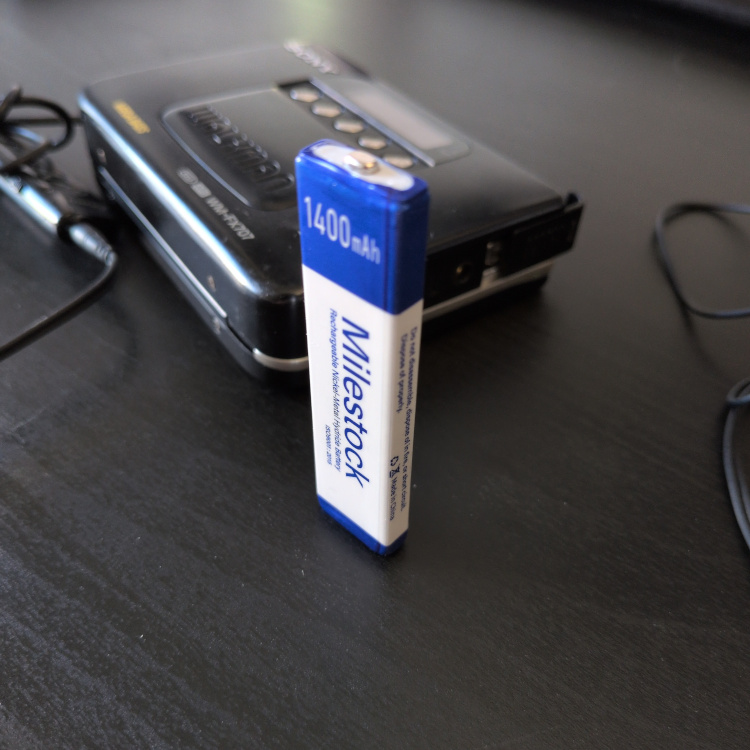
Next, I checked out what the eBay seller meant by "the sound quality is poor" when playing tapes. I loaded up "He Touched Me," my dedicated test tape for players I can't trust not to shred tapes, and gave it a listen.
No, that awful warbling you hear isn't the fear of God made manifest in the music. The mechanism is just super gummed up and desperately needs a servicing.
Popping the hood
Taking this thing down was surprisingly painless. Removing a few screws around the perimeter got me into the shell.
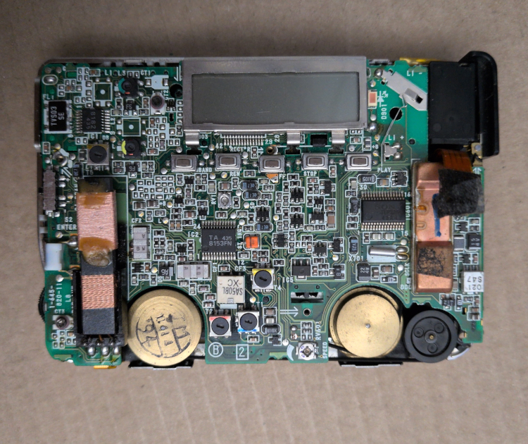
When I looked at the connections joining the motherboard to the rest of the unit, I saw ribbon cables on both sides. Initially, I reached for my soldering iron and braced myself for the annoyance that is soldering ribbon cables. Then, I noticed something. On the side nearest to me, where there was just one ribbon cable, there was a little solderless clip holding it in place. That's the brown and beige thing in the middle of the photo. They'd actually gone out of their way to make this thing serviceable!!! A single tear rolled down my cheek.
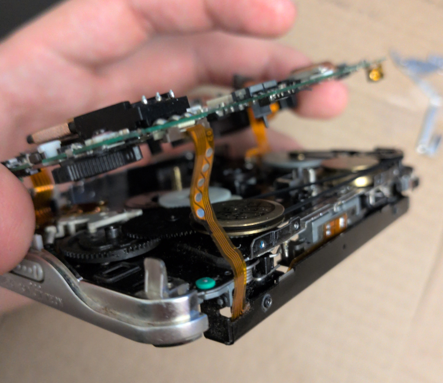
Wiping away my tear of joy before it could fall on the motherboard, I undid the clip and hinged the board away to reveal the mechanism below. It looked relatively simple, and everything appeared to be intact, which was great.
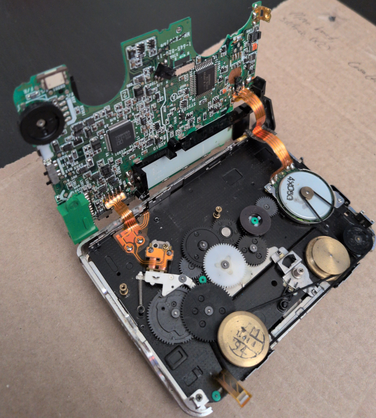
Of course, I quickly noticed a few problems:
1: The mechanism was greasy as all hell. Just looking at it made me feel like I was being talked into buying a timeshare. It's hard to tell from the photo, but a thin layer of some kind of lubricant covered the entire mechanical side, and it was making all manner of dust and debris stick to everything. It's easiest to see this dust in the lower right of this photo.
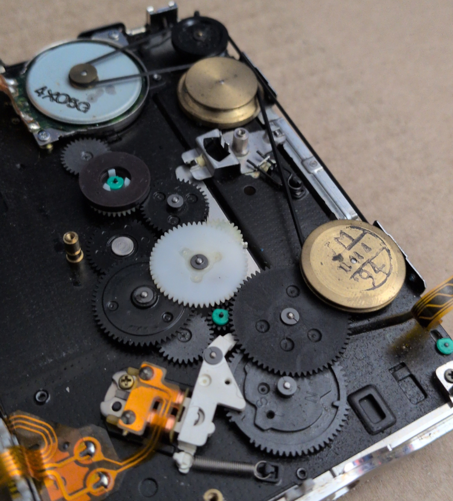
2: The remnants of an old belt, which had long since turned to goo, were littered all over the reverse side of the motherboard.
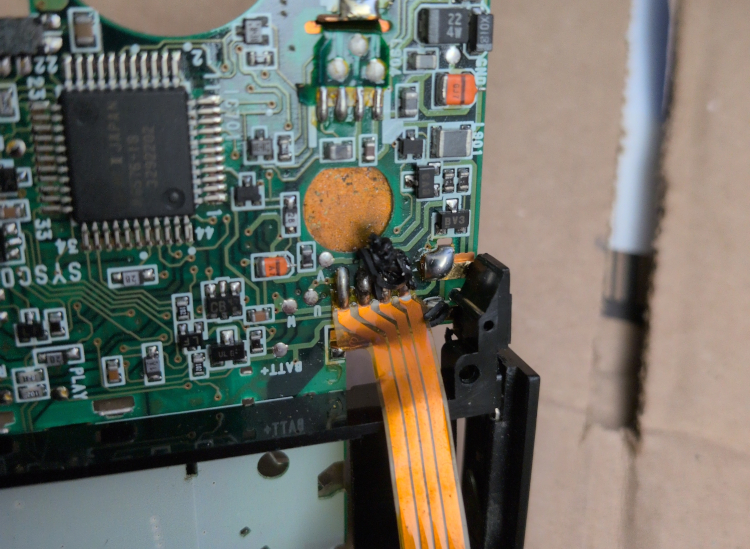
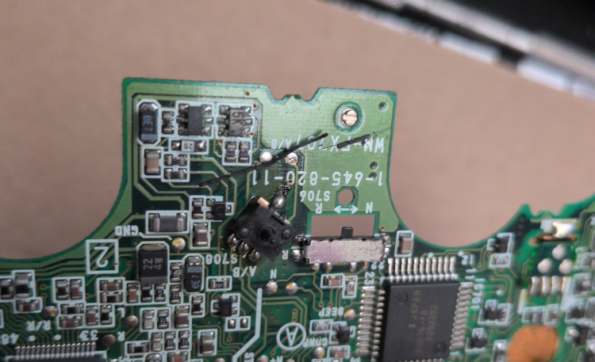
It looks like I've inherited someone else's failed project again. Once again, this is a detail that was conveniently left out of the eBay listing. Here's my theory for what happened to this thing before it got to my desk:
- Someone dug it out of a box somewhere, tried playing a tape with it, and didn't hear anything because the belt had completely liquefied.
- They did a single Google search, read the first result, and just installed a new belt on top of the old belt grime. It still sounded horrible because the mechanism was a little dry and (much more importantly) the belt path was completely filthy with the remnants of old belt that were never cleaned out.
- Thinking all it needed was some lubrication, they indiscriminately dumped some WD-40 all over the inside and tried it again. It sounded even worse.
- Either they or someone else sold it to me on eBay while conveniently omitting the prior (hamfisted) repair attempt.
So, yeah, I've got some cleanup work to do.
Remember that teardown video from earlier? Well, it turns out that video also features some liberal hosing down of this mechanism, which made me cringe pretty hard:
Funnily enough, Marshall over at Wristwatch Revival (the guy who inspired me to start repairing Walkmans) has dealt with this very same thing:
The plan
Anyways, I'm going to fully strip this thing down, clean everything thoroughly, and lubricate it (less horribly) before putting it all back together. Then, I'll replace the old belt and pinch rollers with new ones. The old pinch rollers weren't in particulary bad shape, but I was able to get new ones for just $6 from the same vendor as the replacement belt with no additional shipping charge, so I threw them in.
As an aside, one of the lessons I took from the last repair was to slow down and be meticulous with all the parts, especially the screws. Since I don't have a magnetic parts tray, I did the next best thing. I used some packing tape that doesn't leave much residue to stick all the small parts to a piece of cardboard. I labelled each one and took plenty of photos so that I'd know how the gears all fit together.
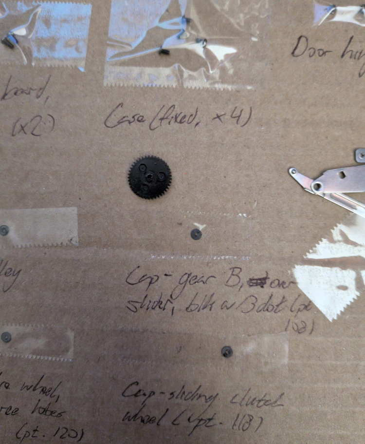
The execution
First on the docket was to pick out all the little bits of goo that were once the original belt. I also removed the old owner's replacement belt because it was probably covered in the remnants of the original belt and I just didn't trust it. After hunting around for a while with my tweezers, here's my detritus haul:
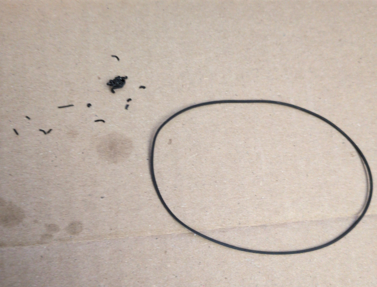
Next, I started disassembling the mechanism. These gears are all held onto their posts by little split rings that I was able to remove relatively easily by wedging a small screwdriver underneath them and twisting. Here's a bright green one on my fingertip for scale:
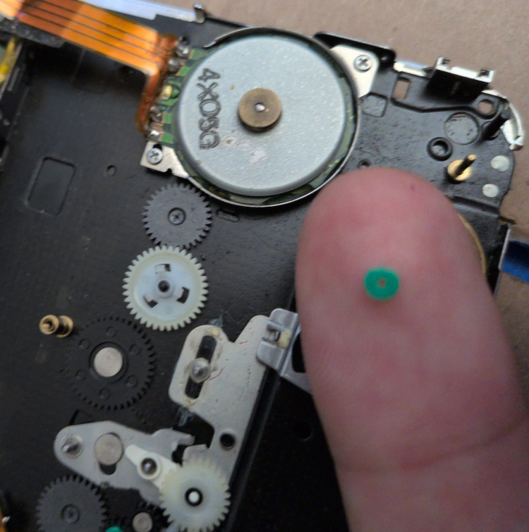
Here's the mechanism side with most of the gears removed. I removed the remaining non-fixed gears after taking this photo:
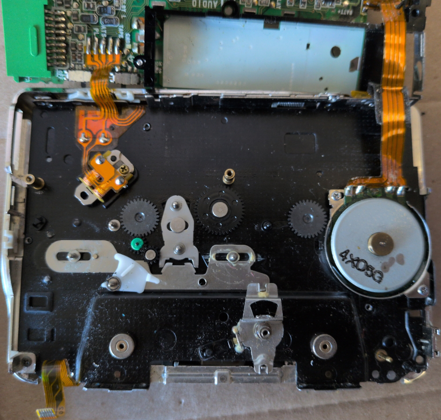
And here's a family photo of all the gears and old belts after I pulled them out:
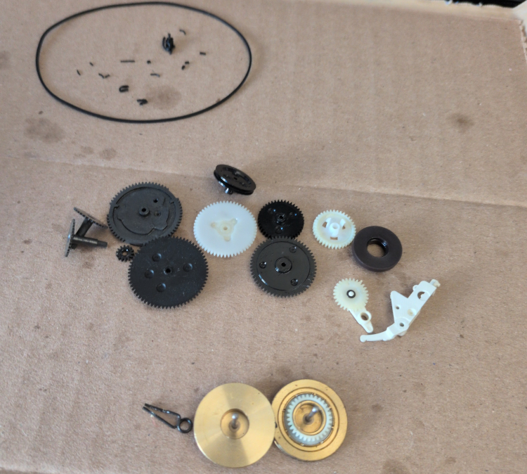
Of course, I didn't come this far to stop here. I also wanted to lubricate the motor bearing, as that hadn't seen the light of day since the Clinton administration. This is where the whole "designed for service" thing kinda falls apart. The motor is made of four components:
- The housing, to which the bearing sleeve is permanently attached. I removed it from the chassis by undoing two screws and undoing four solder joints. Easy peasy. You can tell they intended for the motor to just be replaced wholesale if it ever went bad, but I don't have a time machine or a Sony parts account.
- The upper magnetic ring just sits on the spindle with no adhesive. It's retained by its magnetic attraction to the lower magnetic ring. To remove it, I had to very carefully pull it upwards, as it wouldn't come free unless I pulled it perfectly vertically. This was a pain in the ass due to said attraction to the lower magnetic ring.
- A PCB covered in microscopic traces that form coils. It's held onto the housing by some kind of hot glue. To remove this part, I had to very delicately cut along the glue joints with a craft knife. I had to work very slowly, as the motor would probably be shot if I cut any of the tiny traces on the board.
- A lower magnetic ring and spindle, which just sits on the bearing sleeve. This wasn't stuck on in any way, so I just pulled it off once the PCB ring was free.
From left to right: the coil PCB, the housing, and the lower magnetic ring. Note the lighter areas around the edges of the PCB where the glue used to be.
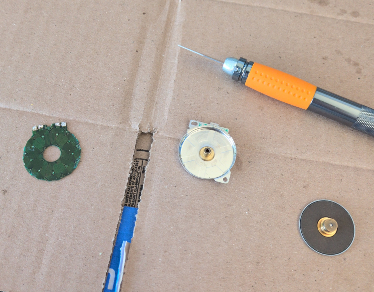
Thankfully, there was a Stereo2Go thread about this exact process, which gave me some direction for this ordeal. I lubricated the bearing with a tiny bit of Isoflex PDP 65 (as recommended by another forumite) in the sleeve and an even tinier drop of synthetic grease at the end of the sleeve where it meets the spindle. I let it sit for a day or so, wiped away any excess, and made sure the bearing spun smoothly. When I put everything back together, I had to use a special silicone adhesive to attach the coil PCB to the housing, but I managed to make it happen without incident.
While I was waiting for the silicone to dry, I got to work on the gears. I cleaned the plastic ones as if they were marketable ducklings covered in crude oil in a TV commercial: very gently, with warm water and a drop of dish soap.
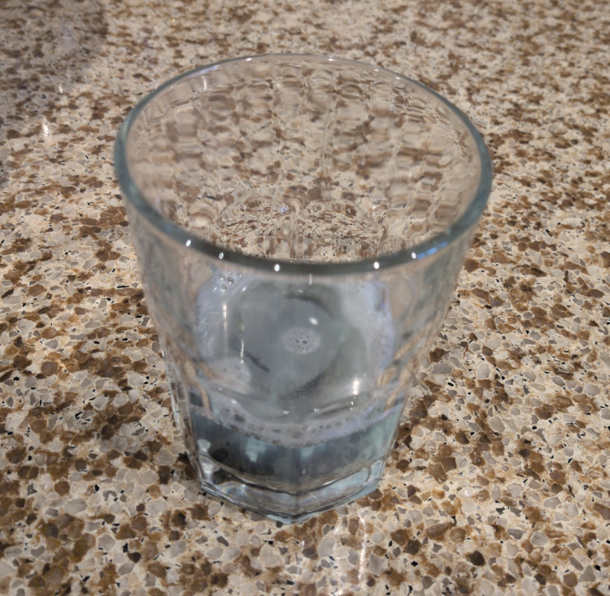
After stirring them around and rinsing thoroughly, I laid them out to dry thoroughly for a few days:
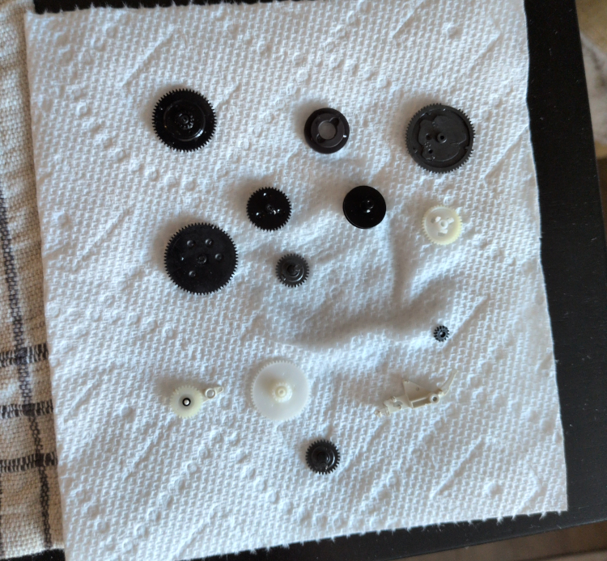
I washed the metal parts and the wheels that interact with the belt with isopropyl alcohol. I paid special attention to anything that the belt touched, including the two flywheels, the motor spindle, and the idler wheel. According to a FixYourAudio article, it was important for the belt path to be completely clean. As expected, the belt showed no mercy when it turned into sticky tar. The sections of belt that were touching these wheels stuck to them firmly and refused to come out.
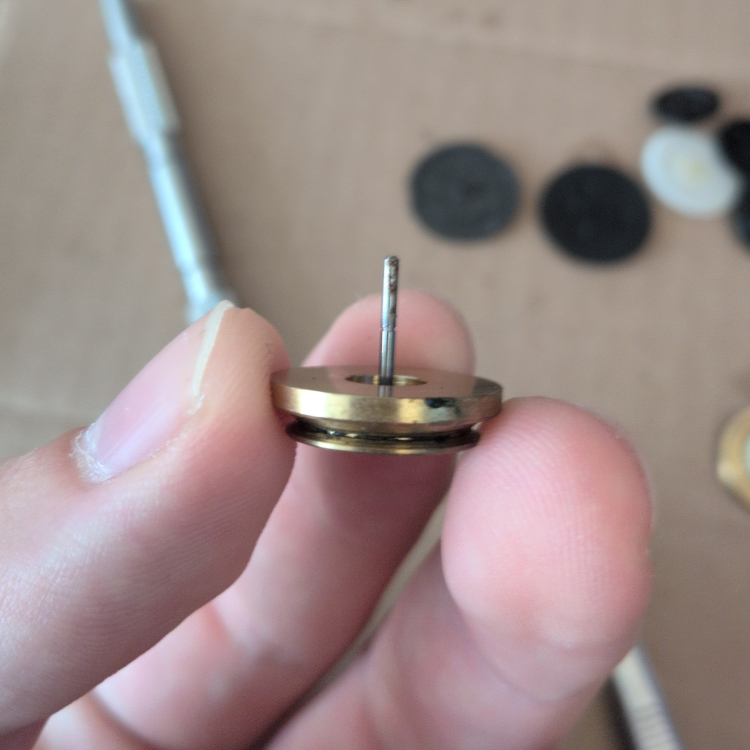
Shoutout to Daniel, my dental hygienist, for recommending Dr. Tung's dental floss to me. It's made of a bunch of strands, as opposed to just being a single strand like normal floss. This allowed it to hold onto isopropyl alcohol while getting into the belt tracks on all the relevant parts. It took some elbow grease, but I eventually got the whole belt path clean.
When that was done, I used more IPA to clean out all the grease and dust on the chassis and applied fresh grease to the non-removable moving parts. I also applied a drop of Isoflex PDP 65 to each capstan bearing and did a test fit to clean out any excess.
With everything cleaned out and lubed, I started to putting everything back together. This was when I noticed something I'd missed up to this point. When I first inspected this one gear that had two sets of teeth, I neglected to look closely at the smaller set. As it turned out, this smaller set of teeth was chewed up to high hell:
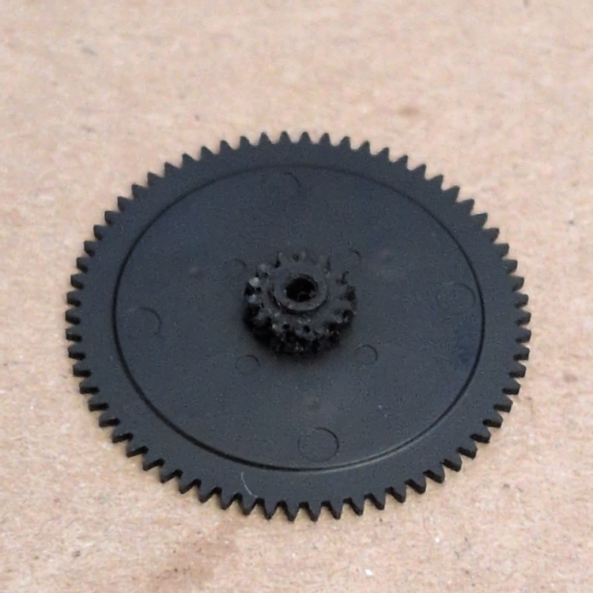
I got pretty worried and started looking around for donor units, but it'd be impossible to know if those had the same issue until I bought one and looked inside. Out of desperation, I started searching around for the part number (thank you, service manual!) and, miraculously, someone on eBay was selling newly-made copies of this exact part! I guess this must be a common issue with Walkmans that use this mechanism. I gladly handed over $20 and had it in my mailbox a week later.
While I waited for that to arrive, I got to the last step before reassembly: replacing the pinch rollers. This was a surprisingly easy process. I just had to remove two of the same caps as were used to secure the gears to get the pinch roller assemblies out. I pushed the spindles out with a paperclip, removed the old rubber wheels, and then repeated in reverse with the new rubber wheels.
After that was sorted out, I continued by carefully applying grease to the contact points of the sliding metal parts and gradually working backwards through my disassembly process. This was made dead simple by the careful labelling I'd done to each and every part and gear on the way in, with helpful part number labels to reference against the service manual if I ever got confused. After all the parts were lubed and put back together, I seated the belt and loaded up my speed test tape. With the help of some software called WFGUI, I got it dialed in pretty accurately. I decided against messing with the other adjustments, as I didn't see a need to risk messing with the settings without all the right calibration tools. Odds were that it wouldn't be necessary.
The result
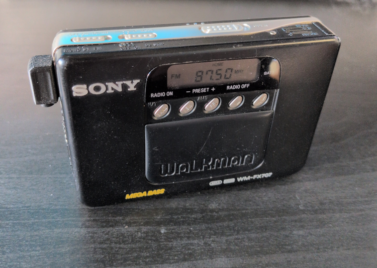
After everything was put back together, this Walkman sounded pretty solid! It's no hi-fi experience, but Walkmans weren't hi-fi machines even in their heyday. My goal here was to attain wow and flutter low enough that I could enjoy casual music without being distracted by the distortion. As you can hear, we've converted a devout Quaker into... whatever kind of evangelical Terry R. Smith is. Just listen to how faithfully (lol) it plays back his "He Touched Me" now:
What did we learn?
Well, for one thing, this Sony shows how different Walkmans can be in terms of repairability. This one was a dream to open up and service compared to the Aiwa I did a while ago. This one didn't have any big electrolytic capacitors to replace, nor did I have to desolder any cables to access the mechanism, which meant that the only soldering I had to do for this entire project was to disconnect and then reconnect the motor cable. For another thing, the layout of the FX707 is a lot cleaner and simpler than the Aiwa's, and it's evident that Sony thought carefully about repairability from the start. This might be kind of surprising, given that the Aiwa is a year or two older and much chunkier than the FX707. Today, consumer tech tends to get smaller, more complex, and less repairable over time, but this project shows that this isn't an assumption you can just take for granted.
For another thing, the service manual was an absolute godsend to have on hand for this project. It's almost like it's a big book of instructions and information meant to help you service this device or something. Without it, I wouldn't have known the part number of that destroyed gear from earlier, meaning I wouldn't have found the replacement I was looking for. Without that, I probably would've blown at least an additional $40 to get a donor unit that may have had the very same issue. I'll definitely look for a service manual (and a high-quality one, at that) before I pull the trigger on my next repair unit. It sure would be nice if all the things we bought today had public service manuals...
Finally, it's always a gamble to buy something this mechanical and this old online, sight unseen. Issues like the destroyed gear and the bad battery door are impossible to spot in photos, so you're at the mercy of the seller at the end of the day. That's just something I'll have to accept as a risk inherent to playing this game. Even once you know about an issue, though, the availability of spare parts is a total crapshoot for these kinds of things. I think I was extremely lucky to be able to get my hands on a replacement for the bad part I had, which could've easily doubled the cost of this project otherwise.
Like the Aiwa, I think I'm going to release this Walkman back into its natural habitat (eBay) to continue frolicking and living its best life. I hope it helps someone else make their first step into the world of collecting and enjoying cassette tapes and physical media.